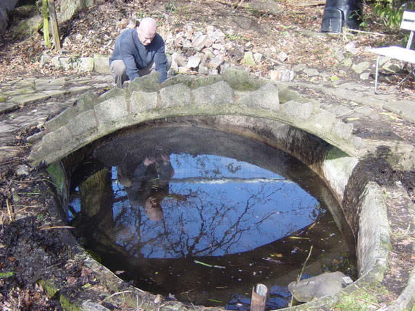
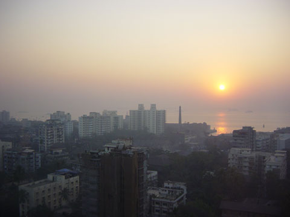

On checking the pond 20th April, the frog spawn have now become tadpoles. Yamini Unni
25th March 2006
March 25th, 2006{kind=link}
14th March 2006
March 14th, 2006{kind=link}
26th February 2006
February 26th, 2006Paris Weekend Trip.
Got up at 7:45am for a very nice continental breakfast at Hotel Astor.
Took tram to La Defense, got off to see The Grande Arch which is 110m high.
Took metro to Charles de Gaulle-Etoile and got off to see the Arc de Triomphe.
Took metro to Concorde and then changed and got off metro at Solferino. Walked to Musee d’Orsay arriving at about 9:45am. The Musee d’Orsay is a splendidly converted railway station and is home to many famous works by Monet, Manet, Cezane, Degas, Renoir.
Afterwards headed to the station to catch our train home.
The Eurostar departed Paris 13:43 arrived 15:25 London Waterloo.

Yamini in front of The Grande Arche
25th February 2006
February 25th, 2006Paris weekend break.
Got up 5:00am and left house at 5:45am. Arrived Waterloo approx 6:30am.
Eurostar departed 07:39 from London Waterloo arrived 11:23 (local time) Paris Gare du Nord. Journey time 3 hours.
Withdrew 200 euros from a cash machine and then followed Dino’s instructions to Ganesh Corner, stopping at VS Co Supermarket on the way to stock up on sambar powder. Had to settle for samosas as they had run out of cutlets. Also had a meat roti which was nice and hot.
Took metro from Gare Du Nord to Cite, to see Notre Dame Cathedral from outside and also the outside of the Palais du Justice.
In the bitter cold we walked for ages towards the Musee D’Orsay. This took longer than was hoping and found Louvre first so went in there. Entered via the pyramid. Got a map and circled the areas we wanted to see. Headed for the Italian paintings and scultures on the first floor. After seeing Mona Lisa walked around the Italian section but too tired to look for other highlights, the museum is huge.
Then walked towards the place du concorde and got a tram to the Eiffel tower. Decided not to go up as queues were huge.
Headed to the Hotel to check in. The Hotel Astor in Suresnes is 5 minutes by tram from La Defense.
Hotel is 2 star, rooms must be partitioned with cardboard but otherwise very comfortable.
Had a nap for about an hour and then set off to meet Dino. He took us for an Italian meal and then we headed back to the hotel intent on an early start on Sunday.

11th February 2006
February 11th, 2006{kind=link}
Wednesday 11th January 2006
January 11th, 2006Took ferry to Elephanta Island at 9am arriving 10am. Walked to top where there is an impressive temple carved out of a cave. The path to the top is lined with shops & also saw monkeys. Had a coffee & coke at MTDC restaurant at top of mountain. Saw eagles fly over which was very impressive. Saw an eagle go in for the kill, a small bird.
Also saw green paraqet. Bought chess set on way back down for 1500 rupees (approx �19.00)
Got back to Gateway of india at 12:15pm & stopped for lunch at The Food Inn in Colaba. Cost was 150 rp inc tip.
{kind=link}
Tuesday 10th January 2006
January 10th, 2006Taxi from hotel at 7:20am to Chennai Airport, arrived 7:40am. Plane to Bombay departs at 9:15am.
Arrived 11:00am
Met Auntie Raji & Avinash at airport.
Taxi from airport to Taj President hotel took 1.5 hours. Whilst in taxi targeted by child beggars. Very good sea view from our 15th floor room. Went for a walk at 14:30 towards Colaba. Had lunch at Shiv Sagar vegetarian restaurant.
Saw The Gateway To India & enquired about ferry tickets to Elephanta Island. Then walked towards Regal Cinema. Yamini casually held onto a yellow rail, only to find her hands were covered in wet paint. (It was several hours before the paint had completely disappeared). Dropped into Central Cottage Industries Emporium on Shivaji Marg. Fantastic table & chairs for approx �4000. They offer export services but decided to leave it this time. Took cab to Churchgate district in search of a bookshop. Cab was 50 rupees inc tip.
After finding bookshop took cab back to hotel, also 50 rupees. Had coke & beer & retired to room.

{kind=link}
Monday 9th January 2006
January 9th, 2006Madras. Uncle Gokri had to wait 3 hours at the station for us to arrive. Institute of Technology campus. Shoba made us a huge breakfast, and then to Madhvan’s house. Said bye to Yamini’s dad and Uncle Gokri. Checked into Chola Cheraton Cathedral Road Chennai. Room upgraded to duplex was very nice. Visited Valluvar Kottam & Kapalishvara Temple.
Sunday 8th January 2006
January 8th, 2006Hung around flat most of the day.
Had egg curry for lunch & went for a bit of a walk. Yamini’s cousin Krishnan, wife Sree Devi and daughter Smrithi visited and brought us presents. Raman, also came round, with a small oil burner.
Left flat at 3:30pm for Ernakulum train station. Train station very busy. Had someone carry our luggage on their head to our train.
Mistaken for a famous Croatian tennis player whilst standing on the platform.
Witnessed a proper scrum to get on the train, pushing & shoving is acceptable. Thankfully we are A/C sleeper class with allocated seat/beds. Sleep disrupted by loud snoring. Train supposed to depart for Madras/Chennai at 17:10. Actually departed at 17:50. Still about 12 hours to make up the time.
Continued reading Brave New World.
Indian coffee is very nice-I think because it has the texture of hot chocolate.
Palghat Junction 21:49pm.
Erode Junction 12:42am
Arkkonam Junction 6:30am
Arrival in Chennai approx 8:00am.
Total of 15 hours, 3 hours late.
Saturday 7th January 2006
January 7th, 200610am collected suit. Dropped into a handicraft shop to buy some presents.
Had lunch at flat.
Went for a walk to local shops.
Dinner at Meridian, courtesy of Bharat and Ranjana, where there was a major gynacology conference with 6000 delegates. Had snacks & drinks before dinner in the presidential suite.